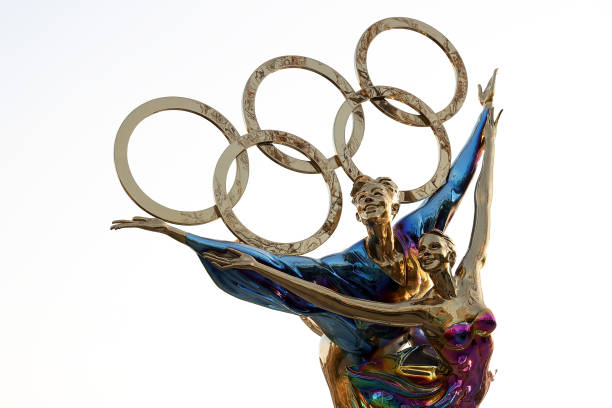
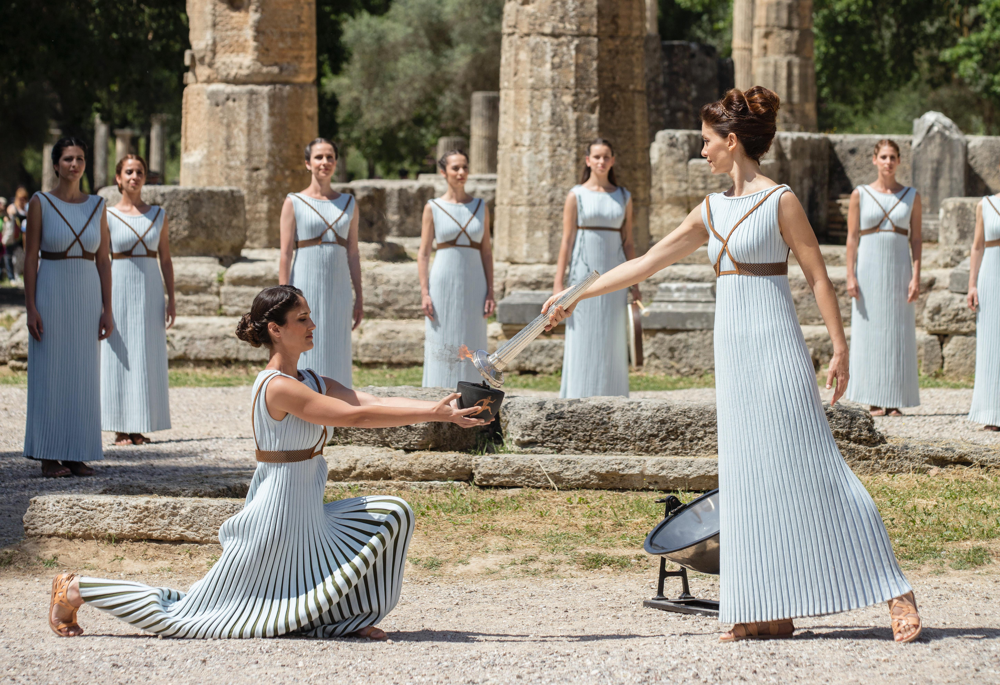

The symbols sculpture of the Winter Olympics.
The first organized international competition involving winter sports was introduced just five years after the birth of the modern Olympics in 1896. Known as the Nordic Games, this competition included athletes predominantly from Nordic countries (such as Norway and Sweden). It was held eight times between 1901 and 1926, with the Swedish capital of Stockholm hosting all but one time. Figure skating was included in the Olympics for the first time in the 1908 Summer Games in London.
From 1928 the Winter Games were held every four years in the same calendar year as the Summer Games. Eventually, however, the increasing cost and logistic complications of the Olympics prompted IOC officials to alter the schedule. Only two years separated the 1992 Winter Olympics in Albertville, France, and the 1994 Games in Lillehammer, Norway. From then on, the Winter and Summer Games were each held at four-year intervals, alternating in even-numbered years.

The Olympic Torch from Athens.